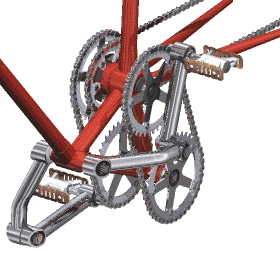
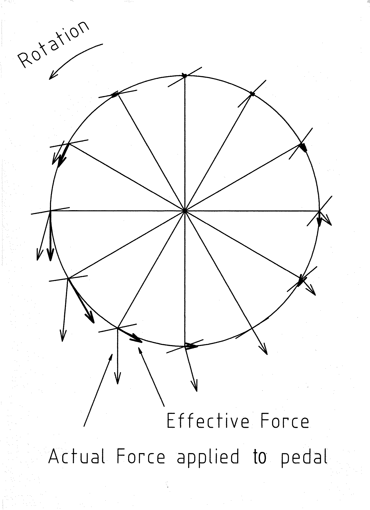
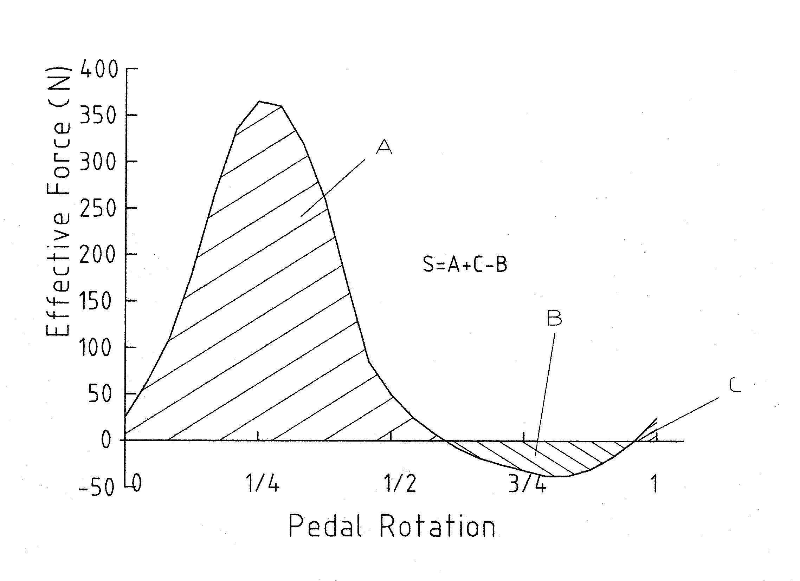
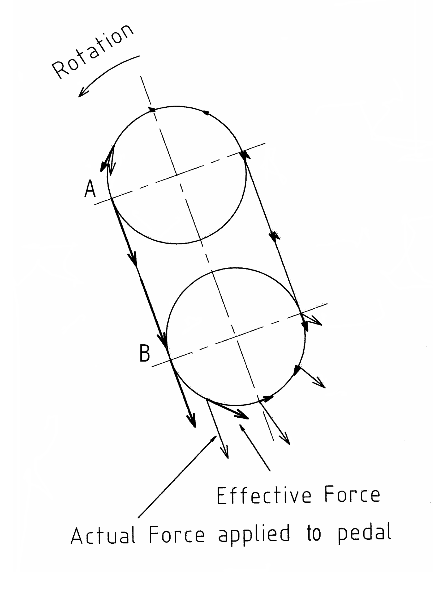
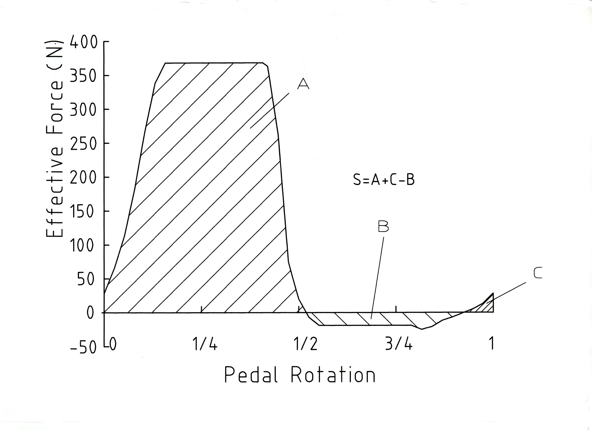
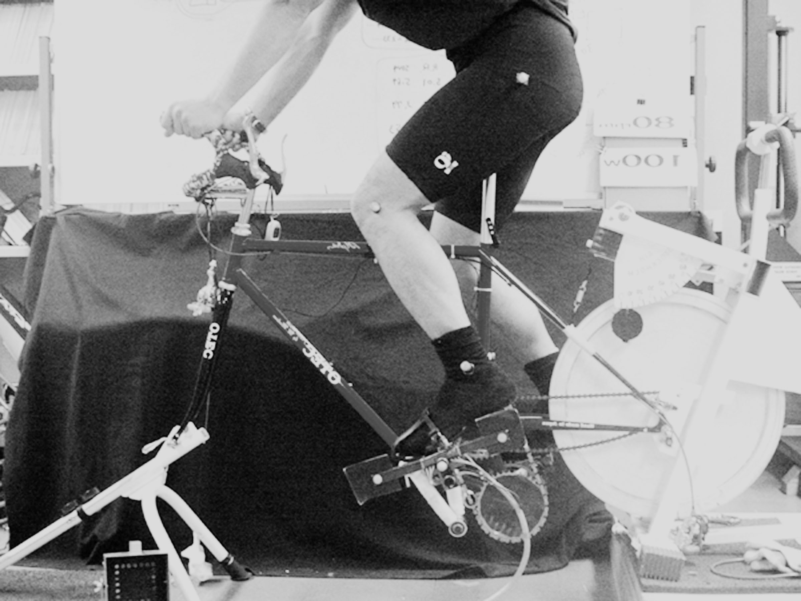
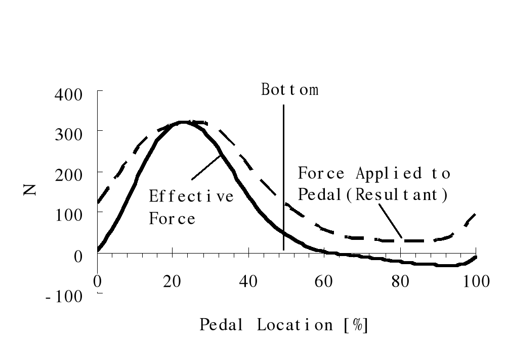
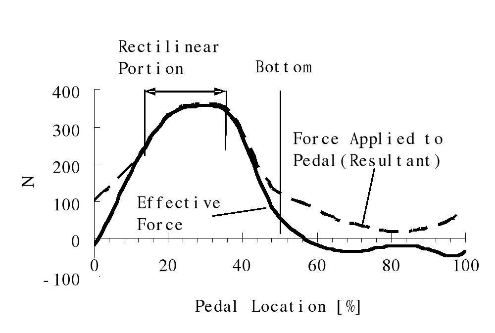
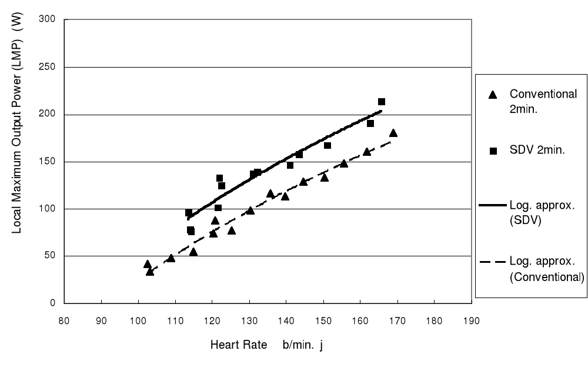
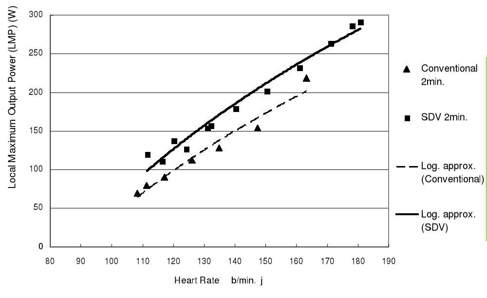

Contents | About | Contact
article 13, issue 04
SDV drive with oval pedal motionTetsu Iwatsuki and Noriyuki Oda
September 1, 2007
[Editorial introduction by David Gordon Wilson: The first known pedaled bicycles came from France around the middle of the nineteenth century. They had pedals at the ends of cranks connected directly to the front wheels. Thus the pedal motion was circular, and almost all the billions of bicycles that have been made since then have followed this lead. Chain drives came in the 1880s that preserved the linear relationship between the distance moved by the pedal and and by the wheel-rim. At different times people have experimented with non-circular chain-wheels aimed at producing more power from human legs. Some strong claims were made but these were never proved in careful tests, and they have not been adopted by bicycle racers. At a time close to 1890 someone in Germany produced a system in which the pedals moved along an oval path. This has been revived in Britain as the "K Drive", and races of streamlined human-powered vehicles have been won using this drive. A contributor to the journal Human Power thought that the good results were more because the oval motion allowed better streamlining than because of any increased power output from the riders. Again, no experimental data have been published. However, such data have been taken comparing rotary pedalling with linear rowing motions using hands and feet, and increased power for short periods has been demonstrated. We suspect that the additional power comes from the contribution of the arm muscles, which have been found to add between ten and twenty percent to the maximum power that can be produced when rotary arm cranking is added to rotary pedaling. Beautiful recumbent bicycles using hand-and-foot linear and arcuate motions have been made by the Thys brothers in The Netherlands and used in "class" races. I have not seen comparative race or test data between this class of bicycle and others.]
[Editor's note: The following presentation is a condensed version of the full paper in PDF format [415 kB]. ]
Abstract
This paper presents an overview of the SDV drive with oval pedal motion. The SDV drive is comprised of two sprockets and a chain extended around the sprockets, thus forming an oval track of the chain. A pedal is attached to the chain directly. Bicycles and recumbents with SDV drives have been commercialized and sold by OTEC Research Inc.
The presumed force pattern versus time of the SDV drive was verified by measured data obtained at Waseda University. The output power under certain assumptions was roughly 1.35 times that of a conventional drive. The test results obtained at the National Institute of Advanced Industrial Science and Technology (AIST) went beyond this. The optimum SDV drive for bicycles and recumbents has not yet been identified.
In the drives currently used for bicycles and recumbents, the riders’ power is not effectively utilized because the direction of the force applied to the pedal differs from that of the crank normal at almost all the crank angles except a limited region, as shown in Fig. 1 below. This is a clock diagram of a well trained cyclist of a standard bicycle, illustrating the actual and effective forces applied to a pedal. The actual forces exhibit appreciable magnitude in the wide region of crank angles between about 90 and 210 degrees from the top, whereas the tangential components of the actual forces, i.e. effective forces, coincide with the actual forces only in more limited regions of crank angles.
Introduction
All the forces in these regions act mainly downward. It might be thought that centrifugal forces take part in this, however you can easily realize that the magnitude of the centrifugal forces does not change greatly during the pedal revolutions.
Thus, the actual forces measured relate mainly to muscular actions and it is presumed that the direction of force which an individual, even a trained cyclist, can apply to a pedal, is not in the direction of rotation but mostly straight downward. Fig. 2 below is a a corresponding force effectiveness pattern.
If the direction of the motion of a pedal in its power phase is designed to coincide with the direction in which a rider can most easily apply force to the pedal while stretching his or her legs, and if there is least loss of momentum at both ends of pedal travel, without delayed reapplication of force at the beginning of the power phase, it is expected that the energy transmission efficiency from the rider to the machine would increase appreciably.
We can derive a more desirable force effectiveness pattern as shown in Fig. 4 from Fig. 2 by stretching the peaks. Then we obtain Fig. 3 corresponding to Fig. 1 of the conventional drive, which we can call an oval clock diagram of the SDV drive. The radii of two circles are the same and smaller than that of Fig. 1. A mechanism comprised of two sprockets and a chain is introduced to realize Fig. 3 in practice. Fig. 4 was prepared assuming such a combination of two sprockets with 39 teeth and a looped chain comprised of 76 links those of which are available as bicycle components. Click on the drawing to the left from the bike-sdv.com website to see an animated version which shows the operation. [Editor's note: Figures 3. and 4. are reversed here from the full paper for layout reasons.]
 
Fig. 1 Fig. 2  
Fig. 3 Fig. 4
In Fig. 3, if A – B , the direction of force applied to the pedal coincides closely with that of the motion of the pedal in the power phase. The area S of Fig. 4 is 1.35 times of S in Fig. 1, which means that a SDV drive represented by Fig. 4 delivers 1.35 times larger output power than that of a conventional drive represented by Fig. 1, assuming that pedal speeds are equal in both the drives.Measurement of force patterns
Fig. 5 shows tests with a SDV bicycle Alpha-ls at Waseda University. The rear wheel was exchanged for the flywheel of an ergometer. The pedal forces were measured by piezoelectric instruments. The saddle position allows the rider to move the foot along the chain. The seat post angle is 86 degrees and the pedal path angle 71 degrees from the ground. The two sprockets have 39 teeth and the chain 70 links. The total length of the track is 889 mm and the total stroke 355 mm. The pedal cranks are 170 mm giving a circular pedal path of 1068 mm.
Fig. 6 and Fig. 7 show the force versus pedal location for a student pedaling at 200 W, 60 rpm with conventional and SDV drives, respectively. On the x - axis 0 and 100 are the top position of the pedal. The y- axis shows the force in Newtons.

When comparing the areas beneath the curves of effective force, the area of Fig. 7 is larger. The ratio of these areas is inversely proportional to the ratio of the pedal paths of both drives as the output powers and pedal rpms are kept equal. In Fig. 6, the applied and effective forces coincide at 23% as in Fig. 1. In Fig. 7, they overlap from 14 % to 42 %, corresponding to the rectilinear portion of the oval track. Comparing Fig. 4 with Fig. 7, in the latter the forces increase more gradually, corresponding to the knee being extended. A sharper increase is possible by using larger sprockets such as with 42 or 43 teeth.
Local maximum output power (LMP)To find out the difference in output powers between a SDV and a conventional drive, a local maximum output power (LMP) against cadences for a certain heart rate was searched for both the SDV drive and conventional drive by employing a mechanical ergometer, thus obtaining sets of LMPs for different heart rates. Two test subjects, an experienced cyclist and non-cyclist, were involved in the experiments. LMPs versus heart rates of the subjects were chosen as the criterion for comparing the performance of the drives. Fig. 8 and Fig. 9 show the obtained LMPs versus heart rates for the non cyclist and the experienced cyclist respectively. Logarithmic approximation lines are added. [for derivations and full results see full paper, Ed.]

The duration of each experiment was two minutes. Each experiment was started with stabilized heart rate after having warmed up. It took them about two weeks to obtain relatively stabilized data both for the conventional and SDV drives. In Fig. 8, the data was obtained in three days and those for the conventional drive were obtained in five days. The cadences varied from 21.5 rpm to 35.1 rpm as heart rate increased and those for the conventional one vary from 22.6 rpm to 65.6 rpm. In Fig. 9, the data was obtained in two days and for the conventional drive in one day. The cadences for LMPs of the SDV drive vary from 20.8 rpm to 38 rpm as heart rate increases and those for the conventional one vary from 35.3 rpm to 88.9 rpm as heart rate increases.
Judging from the plotted points:
- At lower heart rate regions, the LMPs of the SDV drive are 1.5 – 1.8 times of those of the conventional drive,
- At higher heart rate regions, the LMPs of the SDV drive are 1.1 – 1.2 times of those of the conventional drive. Using the logarithmic approximation lines, the LMPs of the SDV drive are 1.2 – 1.4 times of those of the conventional drive.
Discussion and conclusionWhen comparing LMPs versus heart rates for both systems, the SDV drive delivers more power than the conventional drive. As heart rate has a close correlation with energy expenditure of an individual, the above conclusion is valid from the standpoint of gross efficiency which is the ratio of useful work performed to energy expenditure.
There are other estimates of efficiency, one which is termed work efficiency which is the ratio of the useful work performed to the rest of the energy expenditure, after subtracting the energy just moving the legs. According to the gross efficiency, optimum cadences are very low and according to the work efficiency, optimum cadences are much higher. In fact, in some racing conditions, riders prefer higher cadences such as 80 – 100 rpm for conventional bicycles and 50 -70 rpm for SDV bicycles. These values are much higher than those obtained at the laboratory tests described in the previous section. It is also the case that among recreation oriented cyclists there are many who prefer lower cadences less than 60 rpm even in conventional bicycles. In the SDV, judging from a limited experience, we feel the cadences of 50 – 70 rpm is also the case for recreation oriented cyclists.
The reason of lower cadences of the SDV drive than those of the conventional drive in general are that in SDV you can apply a larger sustained force to the pedals, resulting in higher ratio of output power to cadence. We think the geometry of SDV makes riders use larger muscles, giving lower cadences than we expected.
Regarding knee joint loads, troubles have not been reported among about 80 SDV bicycle users.
SDV research and application are just at the threshold. The geometry has not been optimized yet. We would also like to investigate the effect of the direction of the gravity on the riders’ position. Obtaining data on SDV recumbents are another area of interest.see full paper
Acknowledgements and ReferencesAbout the authors:
Tetsu Iwatsuki was born in 1955 and graduated from Department of Applied Physics of Touhoku University in 1979. He works for the Assistive Device Technology Group of the Institute for Human Science and Biomedical Engineering, National Institute of Advanced Industrial Science and Technology. His main research area has been the efficiency increase in the drive train of human powered vehicles in about ten years. He is also an enthusiastic cyclist, from mountain biking and road racing to trips with a recumbent.
Contact:
Institute for Human Science and Biomedical Engineering
National Institute of Advanced Industrial Science and Technology (AIST)
AIST Tsukuba Central 1,Tsukuba, Ibaraki 305-8561, Japan
http://www.aist.go.jp/index_en.html Email: iwatsuki.t AT aist.go.jp
Noriyuki Oda was born in 1940 and graduated from Department of Mechanical Engineering of Tokyo Institute of Technology in 1964. He established OTEC Research Inc. in 1998 for realizing bicycles with the new drive. Before he had been involved in developing machines and plants using high strength ceramics in Asahi Glass Co., e.g. for high temperature, hight pressure tube filters and Stirling engines.Contact:
OTEC Research Inc.
2-30-8 Satsukigaoka, Hanamigawaku, Chiba 262-0014, Japanhttp://www.bike-sdv.com Email: nryk.oda AT kni.biglobe.ne.jp
Human Power eJournal